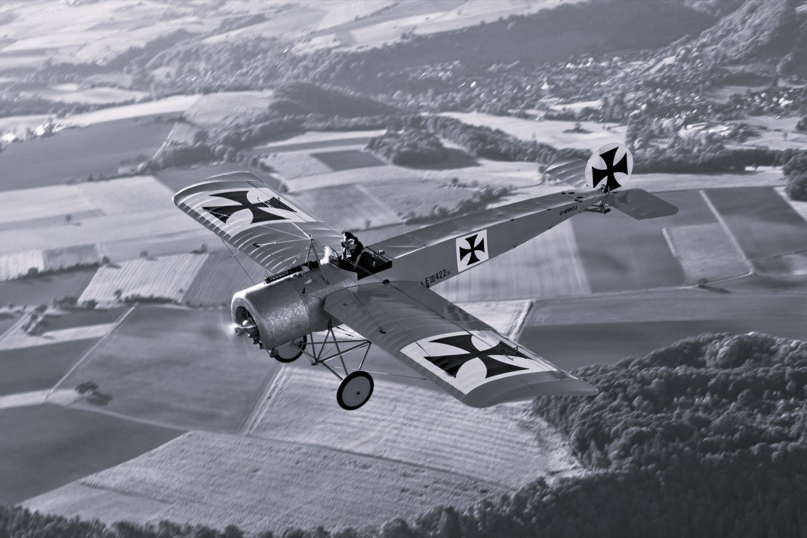

Der erste Weltkrieg wird wegen mehreren Aspekten "Der moderne Krieg" genannt. Diese Aspekte sind:
Neben der Infanterie galt die Artillerie zu einer der wichtigsten Waffenarten des ersten Weltkrieges. Sie wurde benutzt, um vormarschierenden Soldaten unterstützung zu bieten. Der erste nachgewiesene Gebrauch der Artillerie findet jedoch nicht im ersten Weltkrieg statt, sondern wie in der Chronik von Metz beschrieben, benutzten die Engländer in der Schlacht von Crécy einige leichte Kanonen benutzt haben. Dennoch hatte die Rohrartillerie ihren "Triumph", da sie in jeder Gattung eingesetzt wurde. Außerdem waren 3/4 aller Verluste im ersten Weltkrieg mit der Artillerie verbunden. Einer der größten deutschen Artillerie-Kanonen war die Dicke Bertha, die in der Gamma Auffassung eine 1003 kg schwere Granate auf 14.200 m verschossen konnte. Das Geschütz hatte Herstellungskosten von 1 Millionen Mark, was heute etwa 6.010.000 € wert ist und jeder Schuss kostete 1.500 Mark was wiederrum 9.000 € wert ist.
In den späten Jahren des Krieges kamen motorisierte Panzerwagen hinzu, welche die gegnerischen Linien durchbrechen sollte, die Lücken der eigenen Linien schließen und die Infanterie
zu unterstützen. Außerdem erhoffte man sich, dass man somit den still gewordenen Grabenkrieg anzuheizen. Der erste Panzer, der das Schlachtfeld sah, war der britische Panzer Mark 1, welcher
über zwei Jahre geheim entwickelt wurde. Der Panzer wurde in zwei verschiedenen Varianten hergestellt: Die Male-Variante wurde mit mit zwei 5,7-cm-Geschützen in Erkertürmen an den Seiten
sowie drei Maschinengewehren ausgestattet, während die Female-Variante mit fünf Maschinengewehren; je zwei nach den beiden Seiten, eines nach vorn feuernd ausgestattet wurde.
 Ein britischer Mark 1 in der Male Variante (Zum Bild)
Ein britischer Mark 1 in der Male Variante (Zum Bild)
Während des Ersten Weltkriegs spielten Flugzeuge eine wichtige Rolle in der Kriegsführung. Zunächst wurden sie hauptsächlich zur Aufklärung und Beobachtung eingesetzt, später jedoch auch für
Luftkämpfe und Bombenangriffe. Die Flugzeuge dieser Zeit waren oft einfach und leicht gebaut und hatten eine geringe Reichweite. Die meisten Flugzeuge waren einsitzige Doppeldecker, die von
Propellermotoren angetrieben wurden. Die Flugzeuge wurden kontinuierlich weiterentwickelt, was zu besseren Geschwindigkeiten, Höhenflügen und Waffensystemen führte. Die Luftkriegsführung im
Ersten Weltkrieg legte den Grundstein für die moderne Luftkriegsführung und die Entwicklung von Luftstreitkräften in den kommenden Jahrzehnten. Einer der ersten in Serien hergestellten Jagdflugzeuge war die
Fokker E.I, welche von der Firma Fokker Aeroplanbau GmbH hergestellt erreichten im Juni 1915 die Front wurden erreichten.

Eine Nachgebaute Foker E.1(Zum Bild)
Maschinengewehre waren im Ersten Weltkrieg eine wichtige Waffe, die zur Veränderung der Kriegsführung beigetragen hat. Sie hatten eine hohe Feuerrate und konnten Hunderte von Schüssen pro Minute
abfeuern, was sie zu einer tödlichen Waffe gegen Feindpositionen und Infanterieangriffe machte. Ihre Verwendung führte zu einem Wettlauf um die Entwicklung besserer Taktiken und Waffen, und sie
spielten eine entscheidende Rolle in einigen der berüchtigtsten Schlachten des Krieges. Die Auswirkungen der Maschinengewehre waren jedoch verheerend und führten zu einer hohen Anzahl von Todesfällen
und Verwundungen.Ein gutes Beispiel für so ein Maschinengewehr ist das MG08/15 welches von den deutschen Streitkräften im Ersten Weltkrieg eingesetzt worden war und welches als leichtere und handlichere
Version des älteren MG08 entwickelt wurde. Es hatte eine Feuerrate von etwa 500 Schuss pro Minute und konnte sowohl mit Einzel- als auch Dauerfeuer betrieben werden. Es war auf einem Zweibein montiert
und konnte von einem einzelnen Soldaten
bedient werden.
Der Erste Weltkrieg wird oft als der erste moderne Krieg der Geschichte bezeichnet. Dies liegt vor allem an den vielen technologischen Fortschritten und Neuerungen, die während des Krieges eingesetzt wurden. Diese Fortschritte in der Waffentechnologie, der Logistik und der Kriegsführung haben den Ersten Weltkrieg von früheren Kriegen unterschieden.Zum Beispiel waren Flugzeuge und Zeppeline im Ersten Weltkrieg erstmals im Einsatz, was die Luftkriegsführung völlig veränderte. Panzer wurden ebenfalls zum ersten Mal eingesetzt und revolutionierten den Bodenkrieg. Auch Maschinengewehre, Artilleriegeschosse und Giftgas waren neue Technologien, die im Ersten Weltkrieg zum Einsatz kamen und den Krieg zu einem tödlicheren und effektiveren Konflikt machten. Darüber hinaus führte der Erste Weltkrieg zu einem Umdenken in der Kriegsführung und brachte neue Taktiken hervor, die auf der Technologie und den Erfahrungen aus dem Krieg basierten. Zum Beispiel führte die Grabenkrieg-Taktik zu einem neuen Konzept der Verteidigung, das den Einsatz von Maschinengewehren und Artilleriegeschossen beinhaltete. Insgesamt kann der Erste Weltkrieg als der erste moderne Krieg bezeichnet werden, da er zahlreiche technologische Fortschritte und Veränderungen in der Kriegsführung hervorbrachte, die bis heute Einfluss auf den modernen Krieg haben. Die Veränderungen, die im Ersten Weltkrieg eingeleitet wurden, haben die Kriegsführung für immer verändert und zu einem neuen Zeitalter der militärischen Konflikte geführt.
Zum Projekttagebuch: Hier
{kind=link}